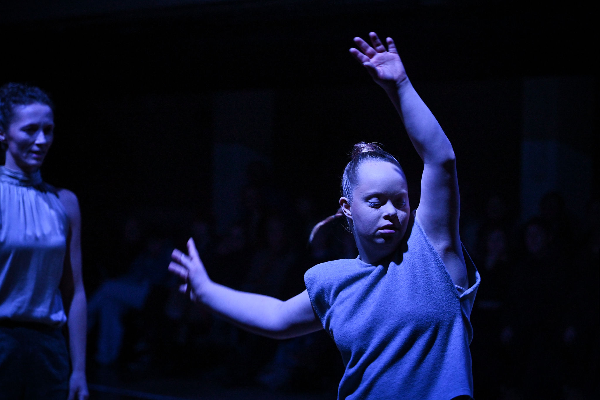

Tanzstück
Wenn ich jetzt stehen bleibe…
Zentralwerk, Dresden 2025
2023 startete farbwerk gemeinsam mit der Dresdner Choreografin Nora Schott den Aufbau eines farbwerk-Tanzensembles mit wöchentlichen Trainings und ersten Auftritten mit tänzerischen Miniaturen in Zusammenarbeit mit professionellen Tänzer*innen während der Tanzwochen inklusiv 2023 und 2024. Im Frühjahr 2024 schrieb farbwerk nun eine erste abendfüllende mixed-abled Tanzproduktion aus und ludt drei professionelle Tänzer*innen der freien Szene zu dieser aktuellen Arbeit. Im Herbst fanden zwei tanzaffine farbwerk Darsteller*innen aus dem Theaterbereich den Weg in die aktuelle Produktion und vervollständigten das mixed-abled Tanzensemble. Es besteht nun aus acht Tänzer*innen und ist im Henny-Brenner-Saal im Zentralwerk zu sehen.


- 